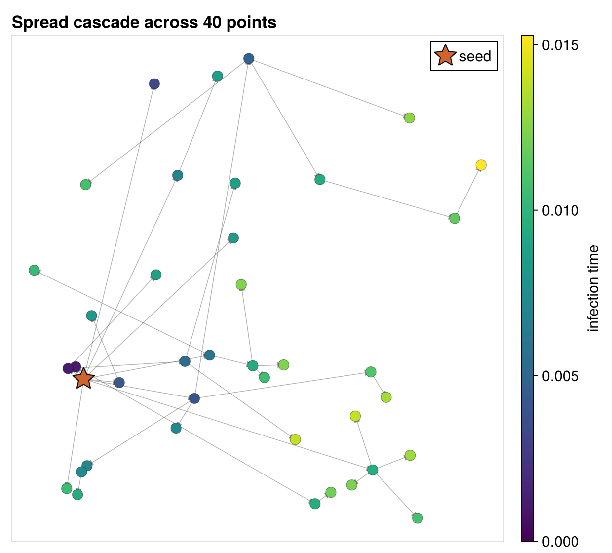

The Landspread Model
Landspread simulates a contagion spreading across a landscape: a set of points scattered on a plane, where an occupied point can spread to an unoccupied one at a rate that depends on the distance between them. It is the repository's canonical demonstration of the θ (parameter) seam — the four-argument form of enable that lets one recorded trajectory be re-scored at different parameter values.

The signature figure: points placed on the unit square, colored by the time each was infected, with an arrow from source to destination for every spread. The star marks the seed (point 1), and the cascade fans out from it.
Where it comes from
The header describes the process directly:
This will simulate spread across a landscape as a process on a graph. There are points on a 2D plane and distances among those points. The rate of spread from one point to the next depends on the distance. You start it somewhere and observe it later.
The intellectual inspiration is disease spread across geographic sites. The companion file src/landspread/genspread.jl frames the problem as inferring infection events from partial observations, and the repository carries a reference PDF, rjmcmc_chagas.pdf, on reversible-jump MCMC for Chagas disease.
genspread.jl is a standalone RJMCMC prototype written against the Gen probabilistic-programming library. It is not part of the compiled module (ChronoSimExamples.jl does not include it) and it references a landspread_log_likelihood function that does not exist — the real one is landspread_likelihood. Read it as an illustration of how the θ-seam likelihood would feed a Bayesian inference layer, not as working code.
What it models
N points are placed at random on the unit square. A binary occupation state spreads from point to point: an occupied point ("mark = 1") can infect an unoccupied one ("mark = 0"), and the waiting time for that spread depends on the Euclidean distance between them. The landscape is fully connected — every point can in principle spread to every other — with distance only modulating the timing. The process is monotone: a point never becomes unoccupied again, so a run seeded at one point eventually saturates the whole landscape.
State
Landspread is unusual among these examples in that it does not use the @observedphysical macro. Instead it tracks reads and writes by hand with @obsread and @obswrite, which is why the state carries its own observation sets:
struct Landscape <: ObservedPhysical
mark::Array{Int,1} # 0 = unoccupied, 1 = occupied
distance::Array{Float64,2} # N×N Euclidean distance matrix
obs_read::Set{Tuple} # addresses read this step
obs_modified::Set{Tuple} # addresses written this step
endThe constructor Landscape(N, rng) draws N random locations on the plane, fills the distance matrix, and starts every point unoccupied.
The single event
There is one event type, Spread, with a source and a destination:
struct Spread <: SimEvent
source::Int
destination::Int
endIts generator reacts to a change in any point's mark: when point i becomes occupied, it proposes Spread(i, j) for every other point j. Its precondition admits the event only when the source is occupied and the destination is empty:
@guard function precondition(evt::Spread, land)
source_mark = @obsread land.mark[evt.source]
dest_mark = @obsread land.mark[evt.destination]
return evt.source != evt.destination && source_mark == 1 && dest_mark == 0
endFiring marks the destination occupied — written as two statements, a plain assignment followed by @obswrite applied only to the access:
@fire function fire!(evt::Spread, land, when, rng)
land.mark[evt.destination] = 1
@obswrite land.mark[evt.destination]
endWriting this as @obswrite land.mark[evt.destination] = 1 would drop the right-hand side: the macro records the address but evaluates only the access, so the write never happens. That exact mistake once made landspread run zero events while appearing to run fine. The usage page shows the test that now guards against it.
The initializer seeds point 1 (mark[1] = 1), which produces the first changed(mark[1]) and bootstraps the whole cascade.
The θ seam
The reason landspread exists is its enable, which takes the four-argument form and reads its coefficients from the parameter vector θ rather than hard-coding them:
const SPREAD_THETA = [0.1, 1.2]
function enable(evt::Spread, land, θ, when)
dist = land.distance[evt.source, evt.destination]
scale = θ[1] * dist^θ[2]
return (Weibull(2, scale), when)
endHere θ[1] is the scale coefficient and θ[2] the distance exponent of the Weibull spread clock; a larger distance yields a larger scale and therefore slower spread. The header explains why this matters:
Reading the spread coefficients from θ instead of hard-coding them means an estimator can re-evaluate this same trace at a different θ — including a vector of ForwardDiff duals — through the
params=keyword oftrace_likelihood, with no module-global state.
The parameter vector enters the simulation through the params= keyword of the SimulationFSM constructor (for generating a trajectory) and the params= keyword of trace_likelihood (for scoring one). Because nothing lives in module-global state, the same recorded trajectory can be scored at any θ — the property that makes gradient-based model fitting possible. Models that still use the three-argument enable keep working; the four-argument default forwards to them, as the reliability model deliberately shows.